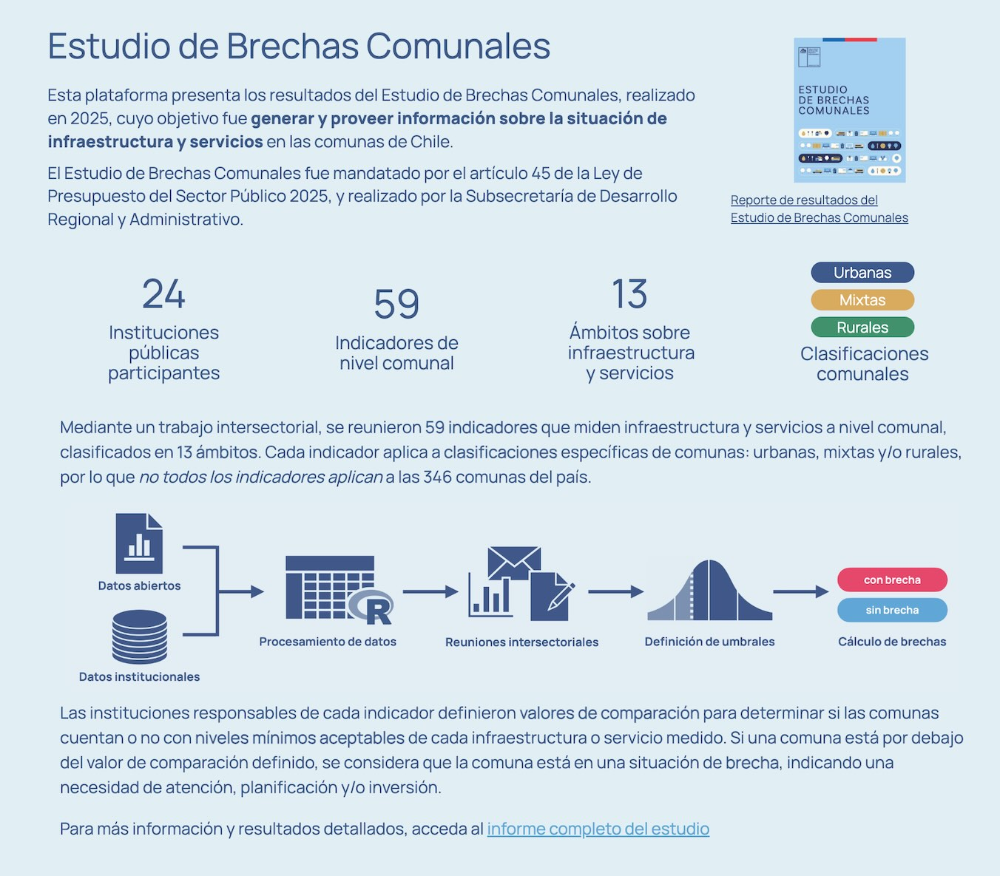
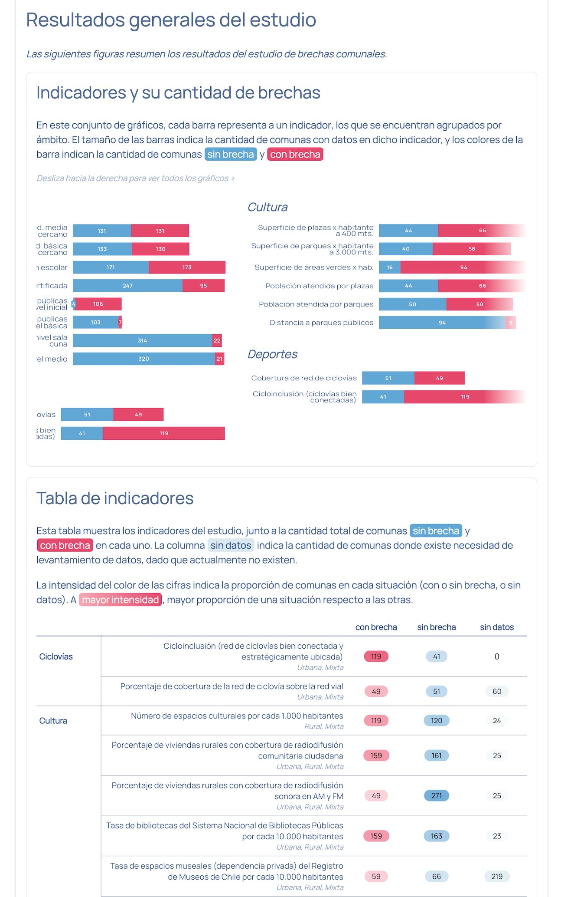
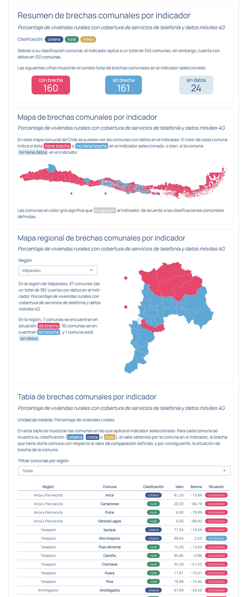
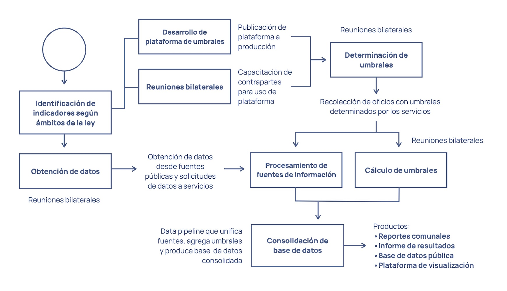
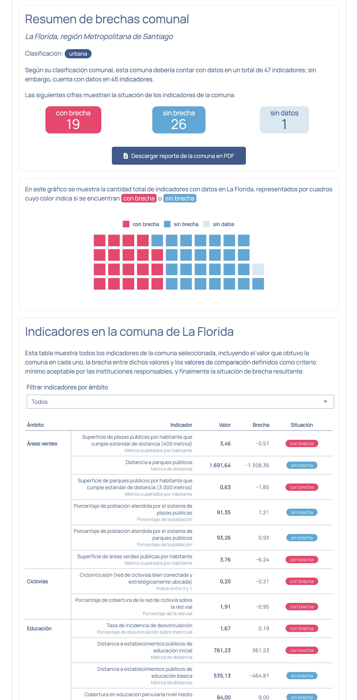
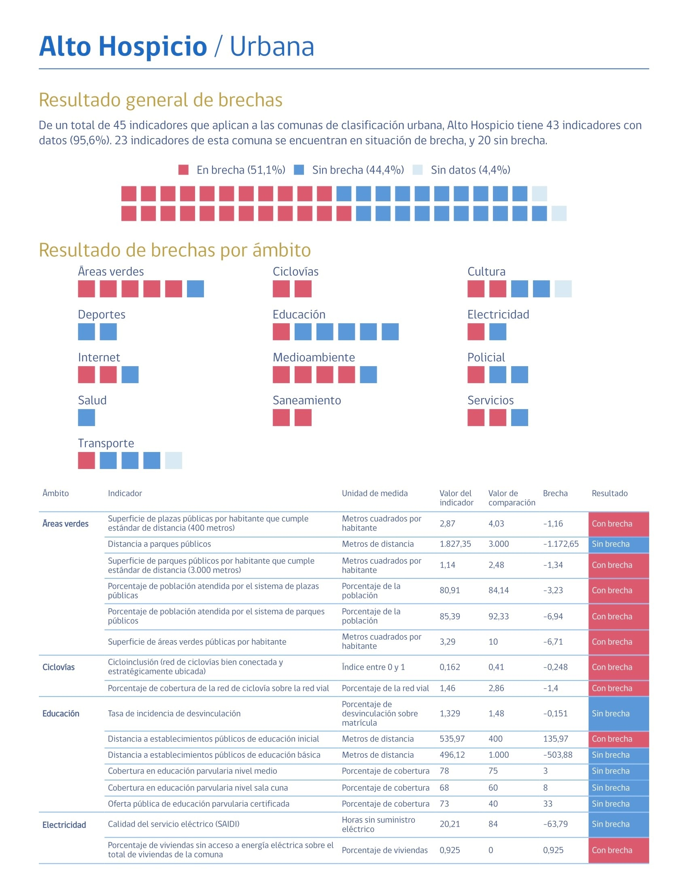

Plataforma de visualización de resultados del Estudio de Brechas Comunales
Medición de brechas de infraestructura y servicios a nivel comunal
24/3/2026


Ya está disponible la plataforma de visualización de los resultados del Estudio de Brechas Comunales de la Subsecretaría de Desarrollo Regional y Administrativo (Subdere).
Este estudio mide brechas en infraestructura y servicios a través de 59 indicadores de nivel comunal, tomando en consideración las diferencias territoriales de comunas urbanas, mixtas y rurales.
Trabajamos con 24 instituciones públicas para obtener datos públicos de calidad y determinar en conjunto los umbrales que definen las situaciones de brecha o ausencia de brecha para cada indicador.
Nos enorgullece poder hacer público un instrumento que aporta en la evaluación de la calidad de vida de las y los chilenos, aportando a una mejor planificación e inversión pública!
Publicaciones relacionadas

Desarrollo del estudio

Todos los datos del estudio fueron procesados en R, y la plataforma interactiva también fue desarrollada en R.
Desarrollar este proyecto en R significó un aumento de la velocidad de trabajo importante, pero también un enorme ahorro de fondos públicos al no necesitar licitar el estudio a una empresa externa.
Procesamiento de datos
Luego de la obtención de datos públicos desde fuentes de datos abiertos o en colaboración con servicios públicos, los datos se guardaron en carpetas por fuente. Por cada fuente se escribió un script de limpieza de los datos para dejarlos en una estructura común.
Luego, por cada fuente limpia, se cargan los datos del paso anterior y se vuelven a procesar para generar los indicadores, umbrales, y otros estadísticos necesarios para el estudio. Estos scripts de procesamiento son todos casi idénticos, dado que se reutilizan una serie de funciones gracias a que los datos llegan limpios y revisados: por ejemplo, bastaba con aplicar funciones como calcular_umbrales(), calcular_brechas() y calcular_indice().
Entonces, contamos con los datos en tres etapas: el dato crudo, el dato limpio y el dato procesado. Este último conjunto de datos está listo para ser unido en una sola base de datos con los resultados del estudio (script indice/indice.R). En este paso se juntan los indicadores de todas las fuentes en un sólo archivo formato .parquet. Además, durante este paso final, se aplican tests unitarios para confirmar que los datos están 100% correctos y vienen sin ningún tipo de falencia.

Finalmente, y dado a que corresponde a un momento posterior en el desarrollo de estudio, en el script umbrales/umbrales.R se aplican los valores de comparación definidos por las contrapartes de los servicios públicos responsables de cada indicador, usados para calcular las brechas. La base de datos resultante es la que se utiliza para generar los gráficos, tablas y reportes del estudio, así como alimentar la
plataforma de visualización de resultados.
Plataforma interactiva
La plataforma fue desarrollada en Shiny en no más de 2 semanas, gracias a la facilidad de desarrollo que ofrece dicho paquete, y el hecho de que las visualizaciones y mapas ya habían sido programados en R para otros aspectos del estudio, por lo que fue cosa de tomar el código y pasarlo a la aplicación. La plataforma misma está alojada en un servidor de Subdere, dentro de un contenedor Docker.
Gráficos y tablas

Todas las visualizaciones de datos del informe de resultados del Estudio también fueron desarrolladas en R, lo que entregó la conveniencia de poder ir actualizando y corrigiendo los datos sin que ésto signifique volver a hacer los gráficos. Esto significa que el proyecto pudo avanzar más rápido, dado que ante cualquier actualización de datos, los gráficos se regeneraban sin costo alguno de tiempo ni trabajo. Las tablas y cuadros del estudio también fueron hechas en R, con los mismos beneficios mencionados.
Reportes
Al producir los resultados del estudio, resultaba crucial poder disponibilizar reportes breves de resultados para cada comuna del país. En proyectos anteriores, reportes comunales de este tipo eran hechos a mano; es decir, 345 reportes individuales. Este trabajo se optimizó generando los reportes con Quarto y R, lo que permitió diseñar un sólo reporte y programar la disposición de los resultados de una comuna tipo dentro del reporte, para luego replicar automáticamente 345 reportes sin tener que hacerlos a mano.

El
documento Quarto parametrizado reportes/reporte_comuna.qmd genera un reporte para la comuna deseada en formato HTML. El script reportes/generar_reporte_comuna.R usa el mismo reporte dentro de un loop para generar 345 reportes individuales sin intervención alguna. Luego, el script reportes/convertir_reportes_pdf.R toma los resultados y los convierte en PDF, y finalmente reportes/combinar_reportes_pdf.R combina los archivos PDF en uno solo, incluyendo agregarle la portada diseñada por el equipo de Comunicaciones. Naturalmente, todo esto se ejecuta desde un sólo script que ejecuta el resto de los scripts: reportes/reportes.R, de modo que si se requiere aplicar una modificación al diseño de los reportes, se aplica en el documento Quarto y se ejecuta reportes.R para obtener en segundos el cambio aplicado a los más de 300 reportes.
Publicaciones sobre apps


Publicaciones sobre chile